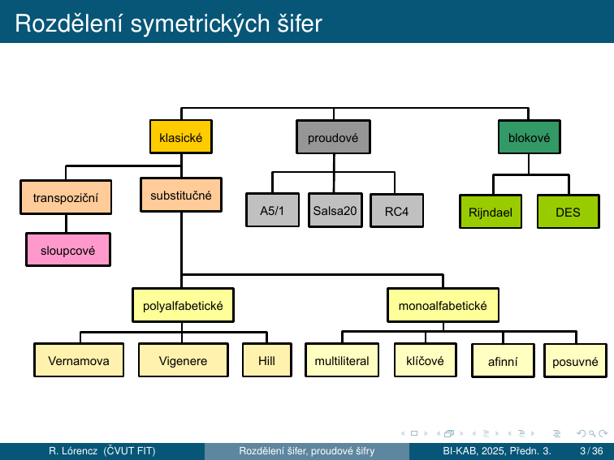
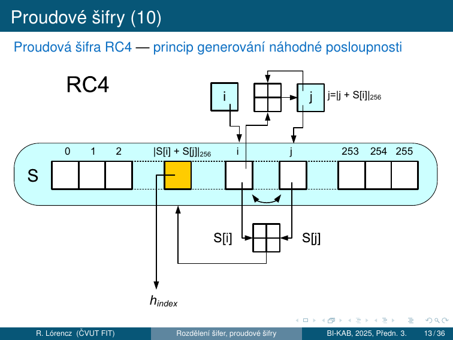
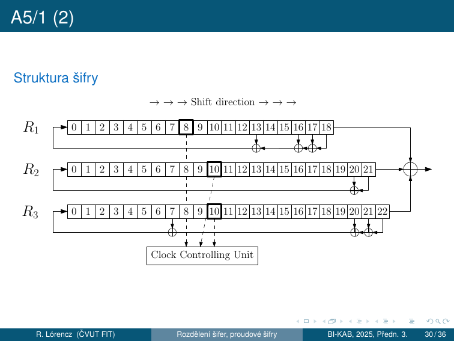

2. Proudové šifry¶
Cíle kapitoly
- Pochopit formální definici proudové šifry a rozdíl proudové vs blokové
- Znát Vernamovu šifru a princip absolutní bezpečnosti
- Porozumět synchronním vs asynchronním proudovým šifrám
- Znát RC4, Salsa20/ChaCha20 a A5/1 — jak fungují a kde jsou slabiny
- Pochopit LFSR a majority taktování u A5/1
2.0 Rozdělení symetrických šifer¶

Symetrické šifry se dělí na klasické (transpoziční a substituční z přednášky 1), proudové (A5/1, Salsa20, RC4) a blokové (Rijndael/AES, DES).
2.1 Princip proudové šifry¶
Proudové vs blokové šifry¶
Z hlediska použití klíče ke zpracování OT rozeznáváme dva základní druhy symetrických šifer – proudové a blokové:
- Proudová šifra šifruje jednotlivé znaky abecedy zvlášť, zatímco bloková šifra zpracovává najednou bloky (řetězce) délky \(t\) znaků
- Podstatné na blokových šifrách je, že všechny bloky jsou šifrovány (dešifrovány) stejnou transformací \(E_k\) (\(D_k\)), kde \(k\) je šifrovací klíč
- Ale proudové šifry nejprve z klíče \(k\) vygenerují posloupnost \(h_1, h_2, \ldots\) a každý znak otevřeného textu šifrují jinou transformací \(E_{h_i}\)
- Proudové šifry by mohly být chápány jako blokové šifry s blokem délky \(t = 1\), ale u proudových šifer je každý tento „blok" zpracováván jiným způsobem, jinou substitucí
Formální definice¶
Nechť \(A\) je abeceda \(q\) symbolů, nechť \(M = C\) je množina všech konečných řetězců nad \(A\) a nechť \(K\) je množina klíčů. Proudová šifra se skládá z:
- generátoru \(G\) (transformace hesla)
- zobrazení \(E\) (šifrování)
- zobrazení \(D\) (dešifrování)
Pro každý klíč \(k \in K\) generátor \(G\) vytváří posloupnost hesla \(h_1, h_2, \ldots\) přičemž prvky \(h_i\) reprezentují libovolné substituce \(E_{h_1}, E_{h_2}, \ldots\) nad abecedou \(A\).
Zobrazení \(E\) a \(D\) každému klíči \(k \in K\) přiřazují transformace šifrování \(E_k\) a odšifrování \(D_k\):
Heslo (keystream)¶
Z historických důvodů se \(G\) nazývá generátor hesla, neboť \(h_1, h_2, \ldots\) bývá proud znaků abecedy \(A\) a substituce \(E_{h_i}\) posunem v abecedě \(A\) o \(h_i\) pozic, tj. \(c_i = |m_i + h_i|_q\).
V anglické literatuře se \(h_1, h_2, \ldots\) nazývá running-key nebo key-stream (keystream), tj. proud klíče, a i když se jedná o derivát originálního klíče \(k\).
Pokud se proud hesla začne po určité pozice opakovat → periodická hesla a periodická šifra (Vigenèrova šifra).
Moderní proudové šifry — binární abeceda¶
Moderní proudové šifry pracují nad abecedou \(A = \{0, 1\}\), tj. \(q = 2\). Sčítání/odčítání modulo 2 je binárním sčítáním/odčítáním — platí \(|a + b|_2 = |a - b|_2\) a vyjadřuje diferenci bitů: XOR, označujeme \(\oplus\).
U moderních proudových šifer ŠT vzniká tak, že jednotlivé bity proudu hesla jsou postupně sčítány s jednotlivými bity proudu OT binárním sčítáním. Vzhledem k rovnosti binárního sčítání a odčítání je transformace pro šifrování a odšifrování také stejná.
Jedinou smysluplnou substitucí \(E_{h_i}\) nad bitem abecedy \(m_i\) je \(E_{h_i}(m_i) = m_i + h_i\) nebo \(E_{h_i}(m_i) = m_i + h_i + 1\).
2.2 Vernamova šifra a absolutní bezpečnost¶
Vernamova šifra (OTP — One-Time Pad)¶
Vernamova šifra používala náhodné heslo stejně dlouhé jako OT ⇒ heslo se ničilo (nikdy nebylo použito k šifrování 2 různých OT).
Na OT (5b na písmeno v 32znakovém Baudotově kódu) se bit po bitu binárně načítá náhodná posloupnost bitů klíče (děrná páska = one-time pad).
Absolutní bezpečnost¶
Absolutní bezpečnost (perfect secrecy)
Vernamova šifra má vlastnost absolutní bezpečnosti, tj. dokonalého utajení. ŠT nenese žádnou informaci o OT — toto je definice absolutně bezpečné šifry.
Ze zachyceného ŠT není možné odvodit žádnou informaci o OT bez znalosti klíče, nezávisle na výpočetní síle útočníka.
Algoritmické proudové šifry a IV¶
Protože distribuce klíče stejně dlouhého jako zpráva je nepraktická, používají moderní proudové šifry algoritmické generování hesla:
- Heslo se „vypočítá" na základě tajného šifrovacího klíče (distribuuje se)
- Aby klíč mohl být použitý pro více zpráv ⇒ princip náhodně se měnícího inicializačního vektoru (IV)
- IV pro každou zprávu je vybírán náhodně a je přenášen před ŠT v otevřené podobě
- IV (za účasti tajného klíče nebo bez něj) nastavuje příslušný algoritmus (konečný automat, šifrátor) vždy do jiného (náhodného) počátečního stavu ⇒ při stejném tajném klíči je pokaždé jiná heslová posloupnost
- Za různost hesla zodpovídá IV; za utajenost zodpovídá tajný šifrovací klíč (podobný princip se využívá i v blokových šifrách)
Zlaté pravidlo
Keystream nesmí být nikdy použit dvakrát se stejným klíčem!
Pokud útočník zachytí \(c_1\) a \(c_2\) šifrované stejným keystreamem \(k\):
Klíč se vyruší a útočník zná XOR plaintextů — z toho lze rekonstruovat oba texty.
2.3 Synchronní a asynchronní proudové šifry¶
Synchronní proudové šifry¶
Pokud proud hesla nezávisí na OT ani ŠT ⇒ synchronní proudové šifry ⇒ příjemce i odesílatel jsou přesně synchronizováni (jinak výpadek jednoho znaku ŠT naruší veškerý následující OT).
Asynchronní (samosynchronizující) proudové šifry¶
Šifry eliminující taktové chyby — u nich dojde v krátké době k synchronizaci a správné dešifraci zbývajícího OT. To se může docílit například tím, že proud hesla je generován pomocí klíče a \(n\) předchozích znaků ŠT:
K synchronizaci dojde, jakmile se přijme souvislá posloupnost \(n + 1\) správných znaků ŠT.
Historická asynchronní šifra — Vigenèrův autoklíč:
\(h_1 = k\) a \(c_i = p_i + h_i\), \(i = 2, 3, \ldots\), kde \(h_i = c_{i-1}\).
Použití proudových šifer¶
- Linkové šifrátory — do komunikačního kanálu přicházejí jednotlivé znaky v pravidelných nebo nepravidelných časových intervalech ⇒ v daném okamžiku je nutné ten znak okamžitě přenést
- Příklad tzv. terminálového spojení: to, co uživatel píše na klávesnici, se ihned objevuje na monitoru druhého uživatele
- Šifrovací zařízení má omezenou paměť na průchozí data
- Výhodou proudových šifer oproti blokovým je malá „propagace chyby": chyba v jednom znaku ŠT se projeví u proudových šifer pouze v jednom odpovídajícím znaku OT, u blokové šifry má vliv na celý blok znaků
2.4 RC4¶
Kontext a parametry¶
| Vlastnost | Hodnota |
|---|---|
| Autor | Ron Rivest, 1987 |
| Jiný název | „Arcfour" (z důvodu ochrany autorských práv) |
| Klíč | 40–128 bitů (40b a 128b jsou nejpoužívanější) |
| Vnitřní stav | S-box 256 bajtů + ukazatele \(i, j\) |
| Protokoly | S/MIME, SSL (historicky), WEP |
| Status | ❌ PROLOMEN — nepoužívat |
RC4 je jedna z nejpoužívanějších šifer na internetu (Rivest – 1987). Nevyužívá IV ⇒ na každé spojení generuje náhodně nový tajný klíč (pomocí asymetrické metody). Struktura RC4 nebyla oficiálně publikována, ale v roce 1994 byla zveřejněna neznámým hackerem disassemblováním z programu BSAFE společnosti RSA.
Šifrovací klíč se používá pouze k vygenerování tajné náhodné substituce \(\{0,\ldots,255\} \to \{0,\ldots,255\}\), tedy substituce bajtu za bajt. Pomocí tabulky \(S\) pak konečným automatem generujeme jednotlivé bajty hesla \(h_0, h_1, \ldots\), které se xorují na OT nebo ŠT.
Princip generování náhodné permutace¶
Obecná metoda generování náhodné permutace P z posloupnosti r:
- Naplníme identickou permutací: \(P_i = i\) pro \(i = 0, 1, 2, \ldots, 255\)
- Pomocí posloupnosti \(r\) promícháme permutaci \(P\)
- Míchání provádíme postupně tak, že v každém kroku \(i\) (\(i = 0, 1, 2, \ldots, 255\)) v permutaci \(P\) vyměníme hodnoty \(P\) na pozicích \(i\) a \(P_{r_i}\), tj. hodnoty \(i\) a \(a_{r_i}\) vzájemně vyměníme
\(P\) zůstává stále permutací. Výsledek je nová permutace závislá na posloupnosti \(r\).
KSA — Key Scheduling Algorithm (inicializace S-boxu)¶
# Inicializace S-boxu jako identita
S = list(range(256)) # S[i] = i pro i = 0..255
j = 0
for i in range(256):
j = (j + S[i] + Key[i % len(Key)]) % 256
S[i], S[j] = S[j], S[i] # swap
PRGA — Pseudo-Random Generation Algorithm (tvorba hesla)¶
i = j = 0
for index in range(n): # n = délka zprávy
i = (i + 1) % 256
j = (j + S[i]) % 256
S[i], S[j] = S[j], S[i] # swap
h_index = S[(S[i] + S[j]) % 256] # bajt hesla
- Počítání s bajty ⇒ redukce modulo 256
- \(i\) se systematicky zvyšuje modulo 256
- \(j\) je náhodný na klíči závislý index
- Hodnota \(h_{index}\) obsahuje heslovou posloupnost generovanou tímto algoritmem

Dvojí použití hesla (útok)¶
U proudových šifer, kde každá parciální substituce je posunem OT v abecedě \(A\) o \(h_i\), postačí k luštění 2 ŠT (\(c, c'\)), šifrované tímtéž heslem. Podobně to platí i pro XOR a další invertibilní operace.
Mějme \(c_i = |m_i + h_i|_q\) a \(c'_i = |m'_i + h_i|_q\). Odečtením ŠT od sebe eliminujeme heslo:
Z posloupnosti \(|m_i - m'_i|_q\) pro \(i = 0, 1, \ldots\) pak luštíme jako při použití knižní šifry, kde v roli původního OT vystupuje \(m\) a v roli knižního hesla \(m'\).
Metoda předpokládaného slova (crib dragging)
Někdy se používá metoda předpokládaného slova, kdy za \(m'\) zkoušíme nějaké běžné slovo (např. v angličtině the) postupně od první do poslední pozice, odpočítáme \(m\) a sledujeme, zda dává smysl.
Slabiny RC4¶
WEP exploit
Prvních ~256 bajtů keystreamu statisticky koreluje s klíčem.
WEP (Wi-Fi Encryption Protocol) používal RC4 s krátkým IV → po zachycení ~4 milionů paketů lze klíč obnovit. Oprava: přeskočit prvních 256+ bajtů PRGA (ale WEP to nedělal).
2.5 Salsa20¶
Kontext¶
- Proudová šifra – 2005 D. J. Bernstein
- Modifikovaná verze Salsa20 o 12 rundách – kandidát projektu eSTREAM
- eSTREAM (2004–08) – nové proudové šifry Profil 1/Profil 2 – SW/HW
- Profil 1 – Proudové šifry pro SW aplikace s požadavkem na vysokou propustnost: HC-128, Rabbit, Salsa20/12, SOSEMANUK
- Profil 2 – Proudové šifry pro HW aplikace s omezenými prostředky: Grain, MICKEY, Trivium
- Salsa20 nabízí rychlosti kolem 4–14 cyklů na B v SW (procesory x86)
Vnitřní stav (512 bitů = 16 slov po 32 bitech)¶
Základ – pseudonáhodná funkce s operacemi ARX (Add-Rotate-XOR):
- 32bitové sčítání, bitové sčítání (XOR) a operace rotace
- Základní funkce mapuje 256bitový klíč, 64bitový nonce a 64bitový čítač na 512bitový blok keystreamu
Vnitřní stav je tvořen 16 32bitovými slovy v matici \(4 \times 4\):
| a | b | c | d | |
|---|---|---|---|---|
| 0 | „expa" | Key | Key | Key |
| 1 | Key | „nd 3" | Nonce | Nonce |
| 2 | Pos. | Pos. | „2-by" | Key |
| 3 | Key | Key | Key | „te k" |
- 4 pevná slova tvoří výraz "expand 32-byte k" (zapsáno v ASCII) na hlavní diagonále
- 8 klíčových slov (256 bitů)
- 2 slova pozice keystreamu (čítač)
- 2 slova nonce
Quarter Round (čtvrtinová runda)¶
Základní operací v Salsa20 je čtvrtinová runda QR(a, b, c, d), která vstup tvoří 4 slova a výstupem jsou rovněž 4 slova:
kde \(\boxplus\) označuje sčítání mod \(2^{32}\) a \(\lll\) označuje cyklickou rotaci vlevo.
Použití pouze operací add-rotate-xor zabraňuje možnosti časových útoků v SW implementacích.
Lichá a sudá runda¶
Lichá runda — QR na každý ze 4 sloupců v matici:
QR( 0, 4, 8, 12) sloupec 1
QR( 5, 9, 13, 1) sloupec 2
QR(10, 14, 2, 6) sloupec 3
QR(15, 3, 7, 11) sloupec 4
Sudá runda — QR na každý ze 4 řádků:
2 po sobě jdoucí rundy (runda po sloupcích a po řádcích) se nazývají dvourunda. Zopakuje se 10 krát → celkem 20 rund.
Nakonec se k výsledku přičte vstup (přidání originálu znemožňuje obnovení vstupu — stejná technika je používána v hašovacích funkcích). Výstup je 64B keystreamu.
Varianty Salsa20¶
- Salsa20/8 (8 rund) a Salsa20/12 (12 rund) s redukovaným počtem rund — doplňující varianty, neslouží jako náhrada
- V benchmarcích eSTREAM dosahují lepších výsledků než varianta Salsa20, ale s odpovídající nižší bezpečností
- XSalsa20 (Bernstein 2008) – 192bitové nonces, prokazatelně bezpečná vzhledem k bezpečnosti Salsa20 — vhodnější pro aplikace, kde jsou požadovány delší nonces
Kryptoanalýza Salsa20¶
- 2005 Crowley – útok na Salsa20/5 se složitostí \(2^{165}\) pomocí zkrácené diferenciální kryptoanalýzy
- 2006 Fischer et al. – útok na Salsa20/6 se složitostí \(\approx 2^{177}\)
- 2007 Tsunoo et al. – prolomení 8 z 20 rund Salsa20 a obnovení 256 bitů tajného klíče za \(2^{255}\) párů klíčů (srovnatelné s „brute force attack")
- 2013 Mouha et al. – důkaz: 15 rund Salsa20 je 128-bitově bezpečných proti DC ⇒ nemá žádnou diferenciální charakteristiku s pravděpodobností \(> 2^{-130}\), to je víc než \(2^{128}\) (brute force attack)
2.6 ChaCha20¶
Vznik a cíl¶
- Proudová šifra – 2008 D. J. Bernstein
- Cíl: zvýšení rozptylu v jedné rundě při zachování nebo vylepšení výkonu
- Stejně jako Salsa20 obsahuje počáteční stav 128bitovou konstantu, 256bitový klíč, 64bitový čítač a 64bitovou nonce → celkem 512 bitů v matici \(4 \times 4\)
Inicializace ChaCha — stav¶
| a | b | c | d | |
|---|---|---|---|---|
| 0 | „expa" | „nd 3" | „2-by" | „te k" |
| 1 | Key | Key | Key | Key |
| 2 | Key | Key | Key | Key |
| 3 | Count. | Count. | Nonce | Nonce |
Konstanta je stejná jako u Salsa20. ChaCha přeuspořádává některá slova v počátečním stavu — konstanty jsou v prvním řádku (vs na diagonále u Salsa20).
ChaCha Quarter Round¶
ChaCha nahrazuje čtvrt-rundový QR(a,b,c,d) Salsa20 pomocí:
Tato verze QR ChaCha aktualizuje každé slovo \(2\times\) (QR verze Salsa20 aktualizuje každé slovo pouze jednou). V průměru se po změně 1 vstupního bitu u QR Salsa20 změní 8 výstupních bitů, zatímco u QR ChaCha se změní 12,5 výstupních bitů.
QR ChaCha má stejný počet sčítání, xorů a bitových rotací jako QR Salsa20. 2 z rotací jsou násobky 8 ⇒ malá optimalizace na některých architekturách včetně x86.
Lichá a sudá runda ChaCha¶
Lichá runda — QR na každý ze 4 sloupců (stejné indexy jako Salsa20):
QR(0, 4, 8, 12) sloupec 1
QR(1, 5, 9, 13) sloupec 2
QR(2, 6,10, 14) sloupec 3
QR(3, 7,11, 15) sloupec 4
Sudá runda — QR na každou ze 4 diagonál:
QR( 0, 5, 10, 15) diagonála 1 (hlavní)
QR( 1, 6, 11, 12) diagonála 2
QR( 2, 7, 8, 13) diagonála 3
QR( 3, 4, 9, 14) diagonála 4
32bitová slova jsou do QR plněná po sloupcích a po úhlopříčkách (bez posuvu pro jednotlivá plnění). Výstup je 64B keystreamu.
Nasazení ChaCha20¶
- BLAKE / BLAKE2 / BLAKE3 — základem hashovací funkce BLAKE, finalisty soutěže hašovacích funkcí NIST
- ChaCha20-Poly1305 — Google vybral pro ověřování zpráv, používán v protokolu QUIC (součást HTTP/3) a v šifře chacha20-poly1305@openssh.com v OpenSSH
- arc4random — generátor náhodných čísel pro Free/Open/NetBSD (nahradil RC4)
- Bez HW akcelerace AES — ChaCha20 nahrazuje AES v systémech, kde procesor nemá akceleraci AES (mobilní zařízení s procesory ARM)
Salsa20 vs ChaCha20¶
| Salsa20 | ChaCha20 | |
|---|---|---|
| Autor | Bernstein 2005 | Bernstein 2008 |
| Kola | 20 (10× dvourunda) | 20 (10× dvourunda) |
| Konstanty ve stavu | na diagonále | v prvním řádku |
| QR difúze | pomalejší | rychlejší (každé slovo 2×) |
| eSTREAM | finalist (Salsa20/12) | – |
| Standard | – | TLS 1.3, RFC 8439 |
2.7 A5/1 (GSM)¶
Úvod¶
A5/1 je synchronní proudová šifra, která se používá na zabezpečení komunikace mobilních telefonů v souladu se standardem GSM.
- Šifra vznikla v roce 1987 a dlouhou dobu byla její struktura utajována
- Až v roce 1999 byla pomocí reverzní analýzy kompletně zrekonstruována
- Skládá se z kombinace tří LFSR (Linear Feedback Shift Register) a nelineárního mechanizmu určujícího posunutí registrů v daném čase
Struktura šifry A5/1¶

LFSR (Linear Feedback Shift Register)¶
LFSR je posuvný registr, kde nový bit se spočítá jako XOR vybraných bitů (tapů — bity zpětné vazby). Aktualizace registrů je určena bity zpětné vazby, které jsou dány koeficienty primitivního polynomu — to zaručuje maximální možnou periodu výstupní posloupnosti registru.
Tři registry A5/1¶
| Registr | Délka | Taktovací bit | Bity zpětné vazby |
|---|---|---|---|
| \(R_1\) | 19 bitů | bit 8 | {18, 17, 16, 13} |
| \(R_2\) | 22 bitů | bit 10 | {20, 21} |
| \(R_3\) | 23 bitů | bit 10 | {22, 21, 20, 7} |
Majority taktování (mechanismus posunu registrů)¶
Zvýrazněné bity \(R_1[8]\), \(R_2[10]\) a \(R_3[10]\) z obrázku se nazývají taktovací bity a na jejich hodnotách závisí, které registry se v následujícím taktu posunou.
Je zřejmé, že mohou-li tři bity nabývat každý jen dvou hodnot, musí jedna hodnota převládat. V každém taktu se posunou jen ty registry, ve kterých hodnota taktovacího bitu převládá. Tento mechanizmus posunu registrů je jediným nelineárním prvkem šifry.
Takt šifry
V jednom taktu se vyprodukuje jeden bit keystreamu:
- Spočítá se většinová hodnota \(h\) taktovacích bitů \(R_1[8]\), \(R_2[10]\), \(R_3[10]\)
- Posunou se ty registry, u kterých je taktovací bit rovný \(h\)
- Výstupní bit keystreamu: \(k_i = R_1[18] \oplus R_2[21] \oplus R_3[22]\)
Příklad: Když \(R_1[8] = 0\), \(R_2[10] = 0\) a \(R_3[10] = 1\) → převládá hodnota 0 → posunou se \(R_1\) a \(R_2\), \(R_3\) stojí.
Šifrový text se získá tak, že na otevřený text \(p\) „naxorujeme" keystream \(k\), tj. \(c_i = p_i \oplus k_i\).
Inicializace šifry¶
1: Nastav všechna políčka všech tří registrů na nulu.
2: for i = 0 to 63 do
3: R₁[0] = R₁[0] ⊕ K[i]
4: R₂[0] = R₂[0] ⊕ K[i]
5: R₃[0] = R₃[0] ⊕ K[i]
6: Posuň všechny tři registry.
7: end for
8: for i = 0 to 21 do
9: R₁[0] = R₁[0] ⊕ IV[i]
10: R₂[0] = R₂[0] ⊕ IV[i]
11: R₃[0] = R₃[0] ⊕ IV[i]
12: Posuň všechny tři registry.
13: end for
14: for i = 0 to 99 do
15: Vykonaj takt šifry (s použitím Majoritní funkce).
16: end for
Šifrování¶
Komunikace spočívá v přenosu posloupnosti rámců, každý délky 228 bitů, přičemž:
- 114 bitů se využívá na zašifrování dat vyslaných z GSM centra k uživatelskému mobilnímu telefonu
- Pomocí dalších 114 bitů se zašifrují data vyslané z mobilního telefonu do centra
Pro jeden rámec (frame) se vykonají následující kroky:
- Na začátku proběhne inicializační fáze, ve které se registry naplní tajným klíčem a inicializačním vektorem a 100-krát se vykoná takt šifry se zahodím výstupního bitu šifry
- Pak se vykoná 228 taktů a vyprodukuje se 228 bitů keystreamu, které se použijí k šifrování
Keystream z jednoho rámce zabezpečí řádově milisekundy hovoru. Pro další rámec stejného hovoru se použije jiný inicializační vektor, ale stejný tajný klíč.
Bezpečnost A5/1¶
Prolomen 2009
- Teoretická bezpečnost: 64 bitů (délka klíče)
- Efektivní bezpečnost: cca \(2^{40.2}\) (nepravidelné taktování snižuje entropii)
- 2009: Karsten Nohl & spol. — prolomen pomocí time-memory trade-off (Rainbow tables) v reálném čase pomocí FPGA
- Útok vyžadoval ~2 TB předpočítaných dat
Tento mechanizmus posunu registrů je jediným nelineárním prvkem šifry a na něm je postavena bezpečnost šifry.
Shrnutí kapitoly¶
Rychlý přehled
| Šifra | Klíč | Stav | Kde se používá | Status |
|---|---|---|---|---|
| Vernam (OTP) | stejně dlouhý jako OT | — | historicky | ✅ Absolutně bezpečný |
| RC4 | 40–128 b | 256 B S-box | WEP (hist.), SSL (hist.) | ❌ PROLOMEN |
| Salsa20 | 256 b | 512 b, 4×4 | NaCl, eSTREAM | ✅ Bezpečný |
| ChaCha20 | 256 b | 512 b, 4×4 | TLS 1.3, QUIC, OpenSSH | ✅ Bezpečný |
| A5/1 | 64 b | 3 LFSR (~64 b) | GSM | ❌ PROLOMEN |
Klíčové otázky ke zkoušce
- Co je keystream a proč ho nelze použít dvakrát?
- Co je absolutní bezpečnost (Vernam)? Jakou má nevýhodu?
- Jaký je rozdíl mezi synchronní a asynchronní proudovou šifrou?
- Popište KSA a PRGA u RC4. Jaká je slabina RC4 ve WEP?
- Co je útok dvojím použitím hesla (crib dragging)?
- Jak vypadá vnitřní stav Salsa20 (matice 4×4)?
- Co je QR (Quarter Round) a jaký je rozdíl mezi sloupcovými a diagonálními rundy u ChaCha?
- Jak funguje majority taktování A5/1? Proč je to jediný nelineární prvek?
- Popište inicializaci A5/1.
- Co je eSTREAM a pro které profily (SW/HW) jsou šifry navrženy?